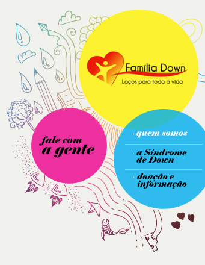

|  | ||||
A FAMÍLIA DOWN foi fundada em 1987, por iniciativa de um grupo de pais que se reunia para troca de experiência. Movidos pela necessidade de informações, foi desenvolvido um trabalho ao mesmo tempo de pesquisa e de sensibilização social. Foi então criada uma Associação de Pais e Amigos das Pessoas com Síndrome de Down, entidade civil de direito privado, de caráter assistencial, cultural e filantrópico, sem fins lucrativos, de âmbito nacional. Com o apoio dos veículos de comunicação, foi lançada uma campanha institucional, com o objetivo de desperatar a sociedade para a realidade da Síndrome de Down. E esta tem sido, ao longo desses anos, a missão da Família Down: - Apoiar e orientar todos os envolvidos com s Síndrome de Down, familiares, responsáveis, cuidadores, profissionais e a sociedade; - Reivindicar os direitos das pessoas com Síndrome de Down na conquista de sua cidadania; - Promover e divulgar estudos, pesquisas científicas e avanços sociais sobre a Síndrome de Down. - Esclarecimento à sociedade sobre as possibilidades de inclusão da pessoa Down nos diversos segmentos, tais como a escola, o trabalho e o lazer, almejando seu desenvolvimento, autonomia e auto-estima; - Elaboração e promoção de projetos de capacitação profissional, visando a inserção das pessoas com Síndrome de Down no mercado de trabalho; - Busca de novas parcerias com entidades e profissionais em benefício das pessoas com Síndrome de Down; - Promoção de seminários, palestras entrevistas com a finalidade de divulgar informações sobre a Síndrome de Down para familiares, profissionais, estudantes e a sociedade em geral. - Coordenação de uma reunião mensal, com apoio de profissionais da área de saúde e para pais de recém-nascidos com Síndrome de Down; - Visitas domiciliares ou ainda na maternidade, quando solicitadas, oferecendo apoio e orientação às famílias, em suas dificuldades pós-natal, como por exemplo, os atendimentos para estimulação precoce. - Sensibilização de profissionais e estudantes da área médica, oferecendo esclarecimentos sobre qual a maneira mais adequada de comunicar aos pais o nascimento de um filho com necessidades especiais, encaminhando-os aos serviços de assistência social da Família Down; Realização de eventos de confraternização dos associados; Realização de promoções para angariar recursos. Elaborado a partir do comodato de um terreno no Bairro Planalto, pela Prefeitura de Belo Horizotne, visa a construção de um local onde funcionarão: O Centro de Convivência tem como objetivo cuidar e capacitar pessoas deficientes, principalmente aquelas carentes de recursos financeiras, de qualquer idade, preferencialmente com Síndrome de Down. Representa oportunidade o adulto com Síndrome de Down prosseguir seu desenvolvimento pessoal e manter o convívio social, contribuindo para o aumento de sua auto-estima. Descrição técnica:
|
||||
 |
||||
 |
 |
|||